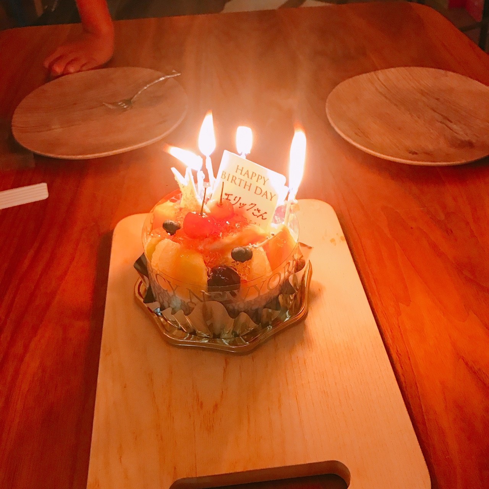
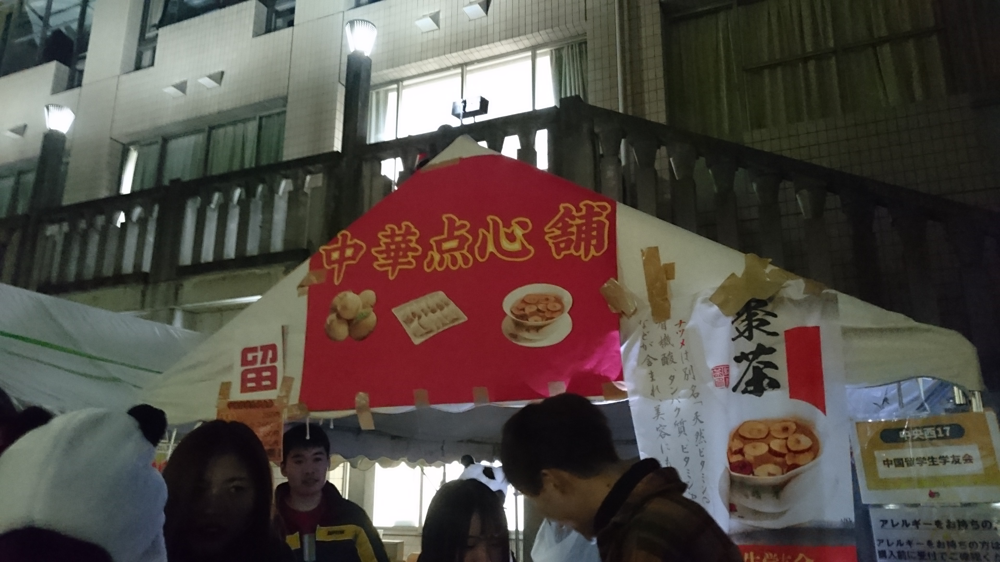
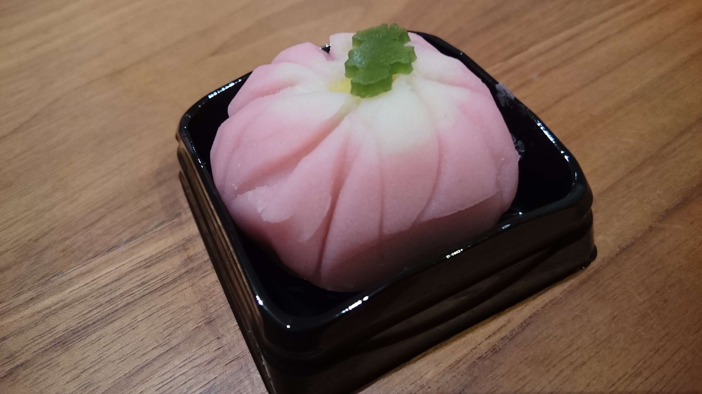
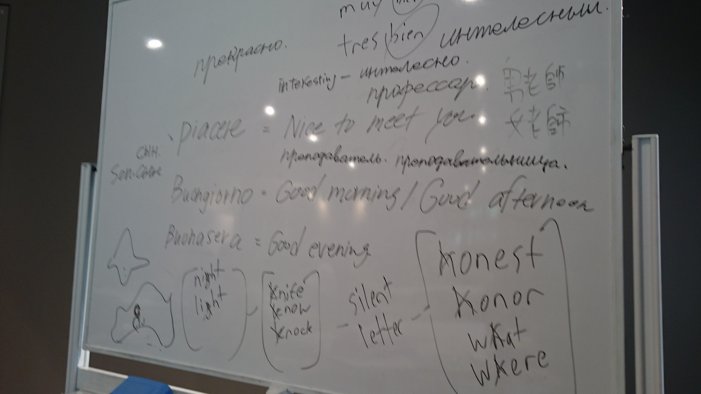
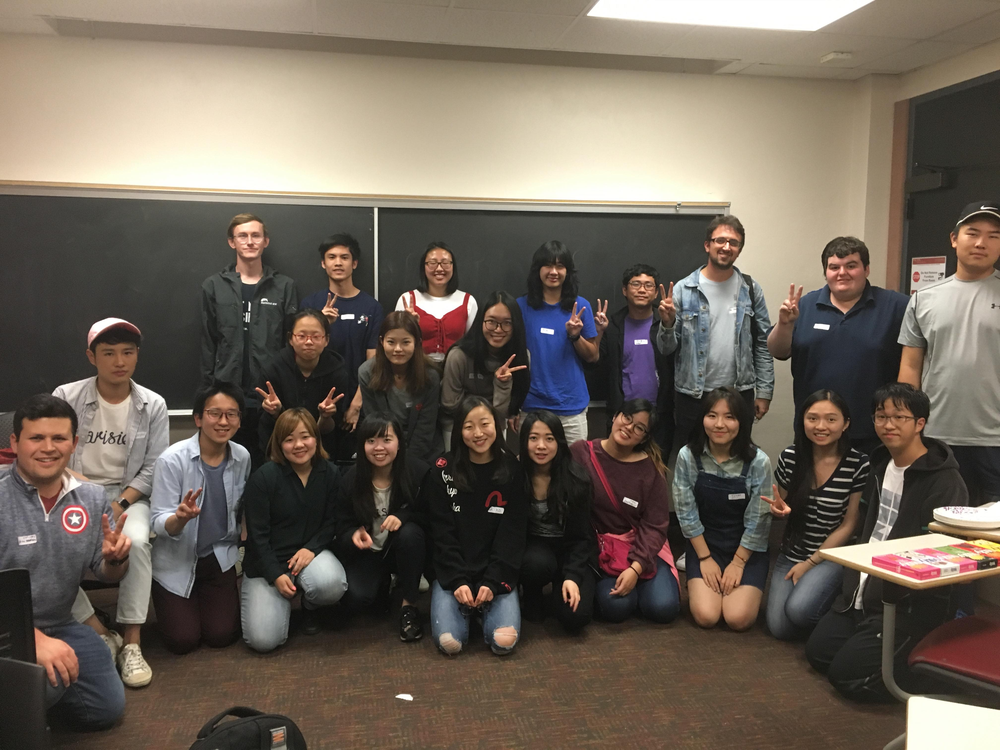
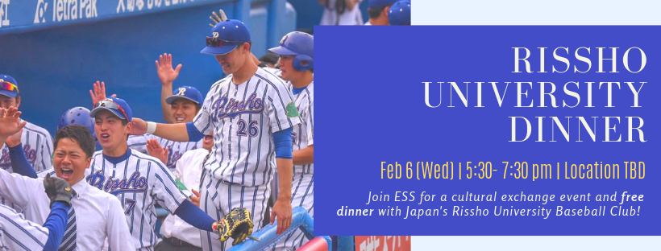
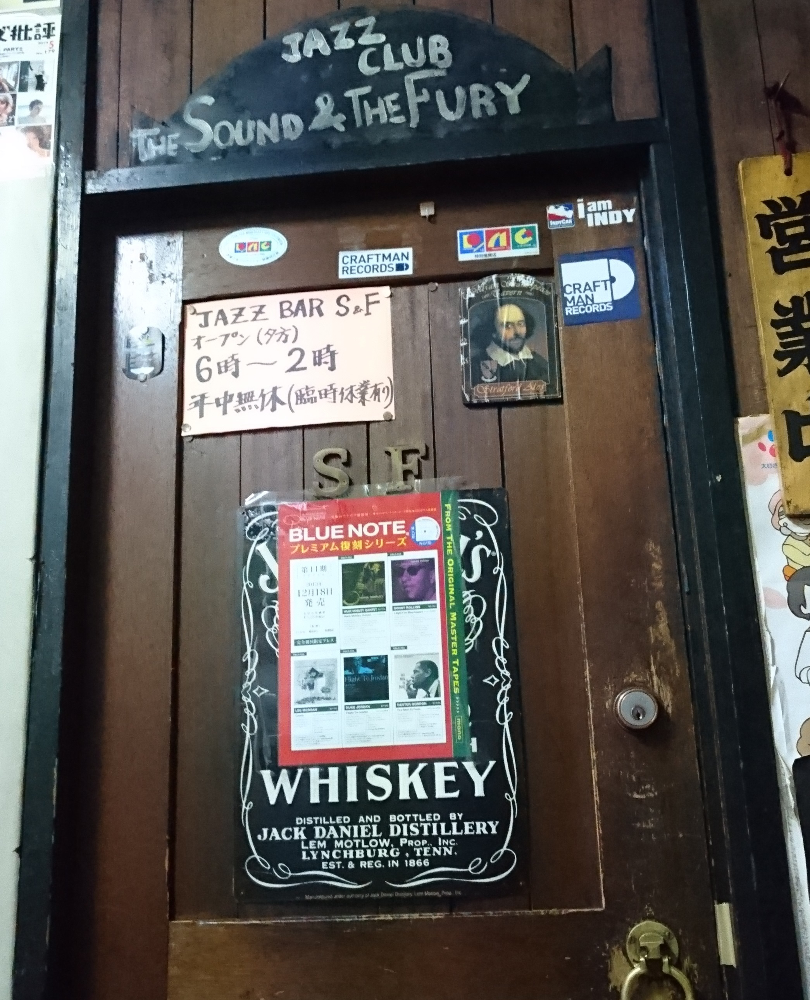

One example of cultural exchange: birthday cake with homestay family in Japan.

One example of cultural exchange: during my one year studying abroad in Tokyo, I took the time to visit a friend's university for their school festival.

One example of cultural exchange: during my time in Tokyo, I partook in many cultural activities such as making Japanese traditional sweets.

One example of cultural exchange: during my time in Tokyo, I taught English to local college students for a few months. I found it extremely fun to engage in cultural exchange with my students, not only was I able to teach them English but they also taught me Japanese, and even Italian and Russian!

One example of cultural exchange: ESS Conversation Table event.
One example of cultural exchange: ESS has a language partner program for students to learn different foreign languages through each other.

One example of cultural exchange: ESS hosts many Japanese universities who visit USC. Some of the events we engage in include campus tours and cultural exchange lunches.

One example of cultural exchange: during my time in Tokyo, I found jazz to be a form of cultural exchange between Japan and the US that many could relate to.